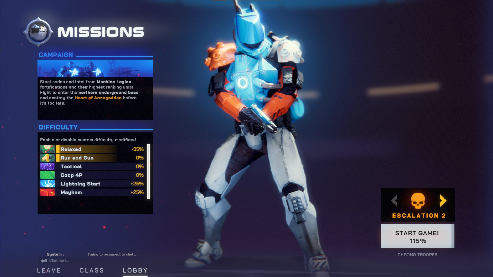

Class Selection Screen
On this screen we aimed at conveying the complex class system where a main class contains multiple unlockable specializations, and each specialization has its own weapon and ability shop.
Other than presenting the menu without too much clutter we did add the play game button which was initially presented only at the lobby screen in order to streamline the single player experience.
As Synthetik2 supports heavy game modding, our designed UI is dynamic with its flexible elements container such as the class selection and the weapon unlock shop.
This class screen took us some iterations to reach its current state, and in this iterative process I learned the power of the observer pattern in UI implementation.
Using a UI element as an observer allowed me to decouple the UI element from the underlying systems in a clean way that enabled faster and cleaner iteration process.
As an example for that we can look at the abilities UI which only listens to OnClassChanged(classID newClass) event, which completely decouples the system that invoked the class change from the ability UI which presents the abilities of the newly selected class.
All of the UI systems - including the tab system, shop system, and unlockables - were implemented by me in a generic fashion where we could easily use them with other UI elements.
Other than the UI systems, this page contains multiple systems including serialization of the player's progress and loadout, automatic content update with mod changes, and the logic of starting a game session with the selected preferences.
Lobby UI
This screen supports presenting multiple players and has a listener UI elements that updates the difficulty percentage from two different systems -> the escalation and difficulty modifiers.
These two difficulty systems were implemented by me and they apply general difficulty for the current run which will affect the amount of experience and money gained.
Like most of the games UI this one also supports added content by mods as one can add difficulty modifiers through modding.

Endscreen
The endscreen is presented to the player(s) at the end of a run (a common occurrence in roguelite games) and shows a compact summary of the game. Here I mainly designed data containers to be edited by the UI artist, as well as the "exp bar" where I exposed tweakable variables to the artist to work with, such as fill speed and acceleration.